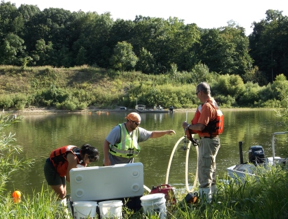

Evaluation of an Integrated Pest Management approach to bighead and silver carp control

Multiple investigations are developing methods to manage invasive bighead carps and silver carps spreading through the Mississippi River basin and threatening to invade other drainage basins. This project sought to integrate several of those methods to increase removal of bighead carp and silver carp from a backwater along the Illinois River near Morris, IL and to demonstrate the integration of those methods to fishery managers.
Hydroacoustic surveys were used to characterize the distribution of fish within the backwater before, during and after the addition of algal feeding attractants, establishment of a water gun barrier and commercial fishing activities. Algal feeding attractants were injected at predetermined locations in the backwater to attract and concentrate Asian carp in the closed portion of the backwater. Nine days after the first algal feeding attractant was added, a water gun barrier was established at the narrowest location on the backwater. The water gun barrier was established about 14 hours before commercial fishers began 3 consecutive days of carp removal; the water gun barrier operated continuously throughout commercial fishing. The presence of fish near the water gun barrier was assessed by hydroacoustics aligned around the barrier. Five commercial fishers daily fished in predetermined zones within the backwater. Hydroacoustic surveys, algal feeding attractant injection and water gun barrier operation continued throughout the commercial fishing period. Fish harvest (species and size) was recorded for each fisher by location and date. The change in fish distribution within the backwater as a function of algal feeding, water gun barrier operation and commercial fishing pressure and the presence of fish near the water gun barrier was assessed.
The goal of this work was to evaluate an approach to integrating various potential controls to make Asian carp control more effective and efficient.
- Commercial fishing efforts removed approximately 14,700 pounds of bighead carp and silver carp.
- Asian carp catch rates decreased in at least two of the five fishing zones.
- Hydroacoustic data analysis is in progress to determine whether the distribution of fish changed in response to adding algal feeding attractants, water gun barrier operation and commercial fishing.
§Midwest Fish and Wildlife Conference, Asian Carp Symposia, January 29, 2014. Title: Evaluation of an approach to integrated pest management of Bighead and Silver Carp
Mark Gaikowski, mgaikowski@usgs.gov
Robert Gaugush, rguagush@usgs.gov
USGS-Upper Midwest Environmental Sciences Center
608-783-6451
Patrick Kocovsky, pkocovsky@usgs.gov
USGS-Great Lakes Science Center, Lake Erie Biological Station
419-625-7164
Edward Little, elittle@usgs.gov
Robin Calfee, rcalfee@usgs.gov
US Geological Survey, Columbia Environmental Research Center
573-875-5399